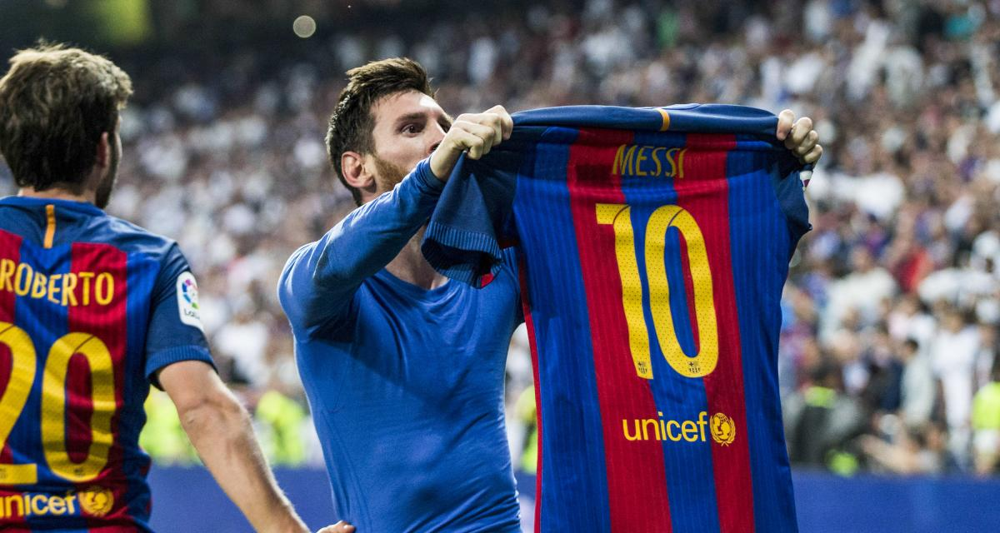

Lionel Messi, parfois surnommé Leo Messi, né le 24 juin 1987 à Rosario en Argentine, est un footballeur international argentin évoluant au poste d'attaquant au Paris Saint-Germain. Seul joueur septuple Ballon d'or et sextuple Soulier d'or, Messi est considéré comme l'un des meilleurs joueurs de football toutes générations confondues. Joueur le plus décisif du xxie siècle, meilleur buteur sous un seul maillot en club, il est élu meilleur ailier droit de tous les temps par France Football tandis que l'IFFHS le désigne meilleur joueur de la décennie de 2011 à 2020.